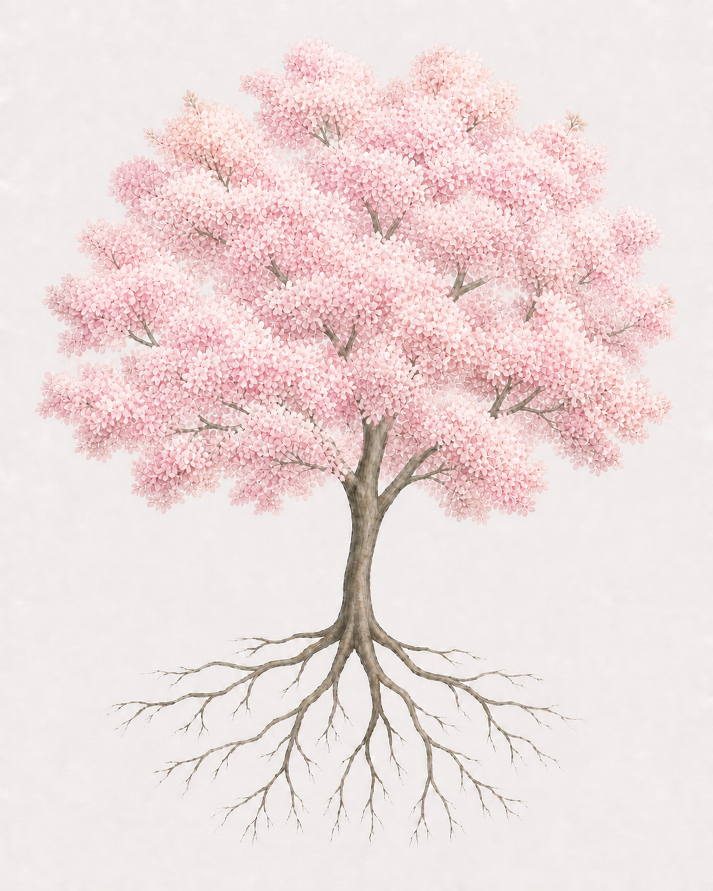
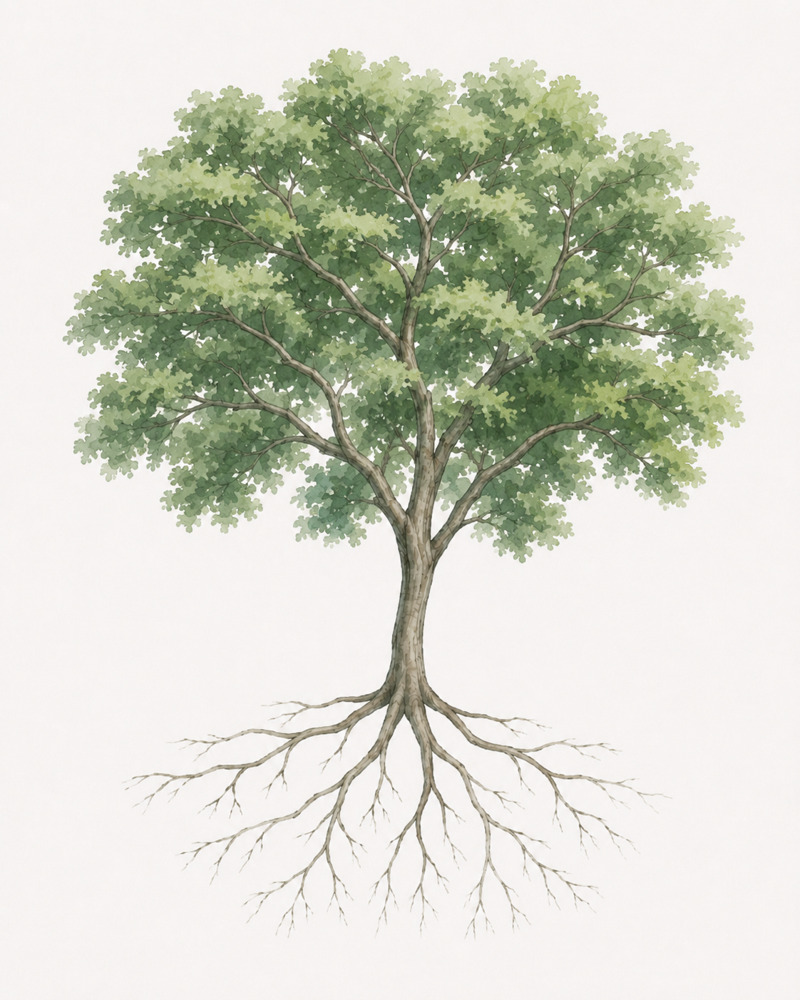
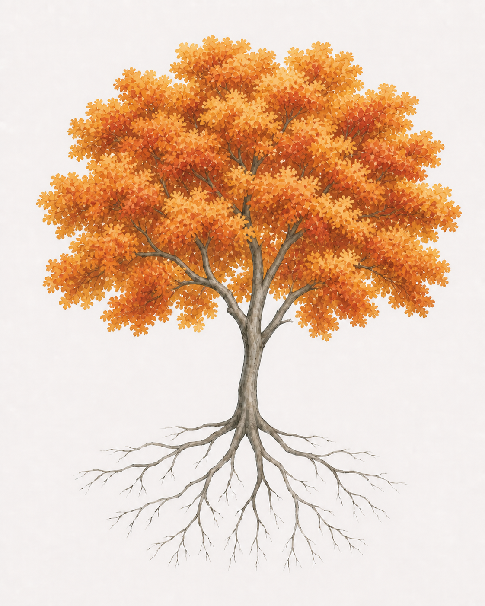
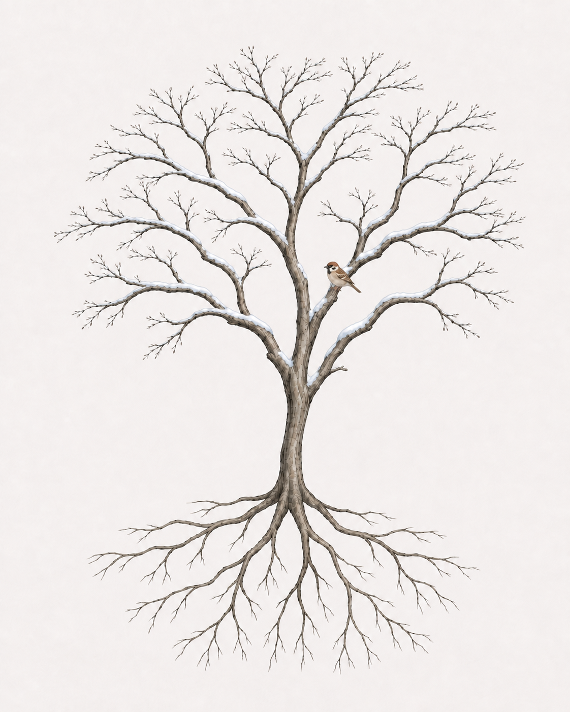

春
盛花期 · 饱满粉色花冠

统一画布、统一缩放、统一根颈线。当前只审阅树形与四季视觉，不讨论分层、风效或生长动画。
盛花期 · 饱满粉色花冠

深浅绿叶 · 层叠叶隙

橙金综合色 · 饱满秋冠

完整裸枝 · 枝面薄雪 · 树麻雀

四季视觉全部通过后，再进入像素锁定与 2.5D 分层。
固定骨架：assets/樱花树枝干.png · 当前夏季采用：assets/樱花树-夏-v2.png